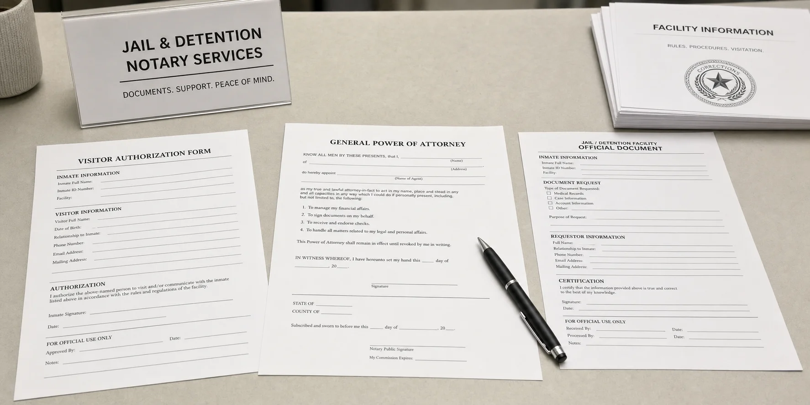

Apostille
Apostille and legalization for documents used overseas.
Mobile notary and apostille support for homes, apartments, offices, small businesses, schools, and hospitals in the City of San Fernando and nearby Mission Hills, plus coordinated jail signings for Pitchess Detention Center and Downtown Los Angeles facilities when documents must be signed in custody.
Apostille and legalization for documents used overseas.
Mobile notarization at homes, offices, schools, and small businesses.
Notary visits to nearby hospitals, clinics, and rehab centers.

Notarizations for inmates at LA-area jails and detention centers.
Living trusts, wills, and estate plans signed at home or office.
Purchases, refinances, transfer documents, and loan signings on tight deadlines.
San Fernando blends small-town streets, multigenerational families, and long-running local businesses between the 5 and 210, so having a mobile notary who already drives Maclay, San Fernando Road, and the surrounding hills can be easier than finding parking and waiting in a busy lobby across the Valley.
We regularly meet clients at homes, apartments, and small businesses near San Fernando Road, Truman Street, and Maclay Avenue, as well as in Mission Hills neighborhoods close to the Mission and local medical offices, for living trusts, powers of attorney, school and immigration forms, and other paperwork that sometimes ends up needing an apostille for international use.
Families and business owners here also call us when a loved one or key signer is housed at Pitchess Detention Center in Castaic or at Downtown Los Angeles facilities, where documents must be signed in custody and returned quickly for court, property, or family matters.
This page covers San Fernando and Mission Hills. For other nearby areas, see our Sylmar, Sun Valley & Pacoima, Granada Hills & Porter Ranch, and Chatsworth & Northridge pages. For all service areas, visit our mobile notary services page.
Many San Fernando families maintain ties to other countries, and local businesses often work with partners overseas, so documents signed here are frequently asked to carry a California apostille before foreign courts, schools, or consulates will accept them.
Typical requests include birth, marriage, and death certificates; school records and transcripts for students studying overseas; powers of attorney for property or business interests abroad; corporate documents for foreign registrations; and court orders related to custody, adoption, or name changes.
We confirm the destination country, review the documents you already have, and explain whether they must be notarized, certified, or reissued before an apostille can be issued, then outline realistic fees and timelines so you can plan around travel, court dates, or school schedules. For urgent cases, see our same-day apostille service.
For a broader overview of apostille requirements and document types, visit our apostille services page.
Many San Fernando appointments are scheduled between work at local shops and offices, school activities, and visits to Mission San Fernando or neighborhood parks, so we focus on punctual arrivals and clear communication about timing.
When someone is in the hospital or a rehab facility, it is rarely practical to leave simply to find a notary.
We coordinate with hospitals, clinics, and care facilities that serve San Fernando and Mission Hills to notarize health-care directives, medical powers of attorney, consent forms, and insurance documents so patients and families can focus on care instead of transportation and parking.
Many local families prefer estate documents to be signed quietly at home or in a professional office rather than a busy retail lobby.
We work with attorneys, CPAs, and financial-planning teams on living trusts, wills, powers of attorney, and related estate documents across the City of San Fernando and Mission Hills, including multi-signer appointments with witnesses.
If the estate involves overseas property or beneficiaries, we can also flag which documents are likely to need a California apostille so everything is prepared correctly from the start and you are not surprised by additional steps later.
From homes near Mission San Fernando to nearby hillside properties and small-business spaces, we handle real-estate notarizations on tight closing and funding timelines.
We pay close attention to signatures, initials, and notarial certificates so packages are accepted the first time and do not delay funding or recording, and we coordinate with real-estate agents, escrow officers, and lenders when needed.
1. We review your documents and situation.
You can text or email photos of your powers of attorney, jail marriage forms, court documents, or other paperwork along with your location in San Fernando or Mission Hills and the inmate’s booking information. We confirm what is needed, who must be present, facility rules, and whether any follow-up apostille work may be required.
2. We schedule a visit from the San Fernando area.
We agree on a time and plan that works for you. For jail notarizations connected to San Fernando and Mission Hills families, we coordinate the visit to Pitchess Detention Center near Castaic or to Downtown Los Angeles facilities such as Men’s Central Jail or Twin Towers and explain what to expect before we go.
3. We complete the jail notarization and next steps.
At the facility, we verify ID according to California notary law, witness signatures, and notarize your documents. If the paperwork will be used in another country, we can help route it for a California apostille and arrange secure return or delivery once the notarization is finished.
Travel and service fees for jail signings depend on the facility, number and type of documents, and timing. For more details, see our jail notary services page.
Do you charge extra to come to the City of San Fernando?
Travel fees depend on your exact location, time of day, and whether a hospital, school, or jail visit is involved, and we will quote the full cost before you book so there are no surprises.
Can you meet near Mission San Fernando or in downtown San Fernando?
Yes. Many clients prefer to meet near Mission San Fernando, along San Fernando Road or Maclay Avenue, or at nearby homes and offices, and we can often coordinate signings around your schedule and parking needs in these familiar spots.
Can you help if we are visiting from out of town?
Some families stay in San Fernando or Mission Hills while handling court, real estate, or family matters in Los Angeles. We can usually coordinate mobile notary appointments and, when needed, follow-up apostille work around your travel plans.
What identification do we need for a mobile notary appointment?
Each signer must have valid, government-issued photo ID such as a driver’s license or passport, along with all pages of the documents that need to be signed, and we review ID questions with you before scheduling.
How do we know if an apostille will be required?
If your documents will be used in another country, they may require an apostille or consular legalization after issuance or notarization, and we can review your situation and confirm next steps before you invest time and money.
Do you offer same-day mobile notary appointments in San Fernando?
Same-day and urgent appointments may be available depending on the time of day, travel conditions, and the type of appointment. The fastest way to check is to call or text with your location, timing, and document needs.
We provide mobile notary and apostille support for the City of San Fernando and nearby Mission Hills homes, offices, schools, hospitals, and small businesses, plus coordinated jail signings when a signer is in custody. Call now to confirm timing, ID, and documents—then book online if you prefer.